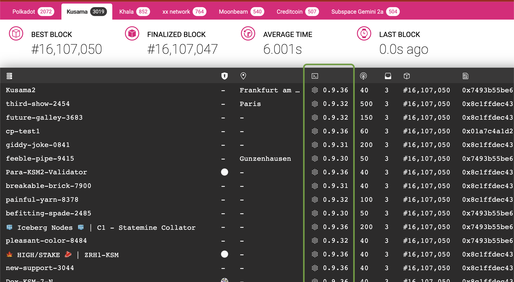

<!DOCTYPE html>
<html lang="en">

<head>
  <meta charset="utf-8" />
  <meta name="viewport" content="width=device-width, initial-scale=1.0, maximum-scale=1.0, user-scalable=no" />

  <title>Substrate Wasm meta-protocol</title>
  <link rel="shortcut icon" href="./../../assets/favicon.ico" />
  <link rel="stylesheet" href="./../../dist/reset.css" />
  <link rel="stylesheet" href="./../../dist/reveal.css" />
  <link rel="stylesheet" href="./../../assets/styles/PBA-theme.css" id="theme" />
  <link rel="stylesheet" href="./../../css/highlight/shades-of-purple.css" />

  <link rel="stylesheet" href="./../.././assets/styles/custom-classes.css" />

</head>

<body class="site">
  <header class="site-header">
    <!-- This logo is a link only on the watching server, not the production build -->
      
  </header>
  <main class="reveal">
    <article class="slides">
      <section  data-markdown><script type="text/template">

# Substrate Wasm Meta Protocol
</script></section><section  data-markdown><script type="text/template">
# Part 1

- This is a big lecture, so I divided it into two small parts, that's all 🫵🏻
</script></section><section ><section data-markdown><script type="text/template">
## It All Began With a Runtime..

- The Client / Runtime division is one of the most important design decisions in Substrate.
  - 👿 Bad: Fixed opinion.
  - 😇 Good: Enables countless other things to **not be fixed**.
</script></section><section data-markdown><script type="text/template">
## It All Began With a Runtime..

- Recall that the boundary for this division is the **state transition**.

> Anything dictating how your state transitions is the runtime.
</script></section><section data-markdown><script type="text/template">
## It All Began With a Runtime..

- Personal opinion:

> Anything dictating how your state transitions is the runtime.
</script></section><section data-markdown><script type="text/template">
## It All Began With a Runtime..

- Personal opinion:

> Substrate technology stack will put "Wasm stored onchain" on the map,<br/>
> the same way Ethereum put "smart contracts stored onchain" on the map.

- Bold claim:

> It is only a matter of time until every blockchain is doing the same thing.
</script></section><section data-markdown><script type="text/template">
## It All Began With a Runtime..


</script></section></section><section ><section data-markdown><script type="text/template">
## Substrate: a short recap


</script></section><section data-markdown><script type="text/template">
### Substrate: a short recap

- **Host Functions**: Means of a runtime communicating with its host environment, i.e. the Substrate client.
- **Runtime API**: The well-defined functions that a Wasm substrate runtime is providing.

- Database is a _untyped_, _opaque_, **key-value** storage, stored **per-block**, on the **client side**.

- Communication language of client/runtime is SCALE:

```rust
let bytes: Vec<u8> = 42u128.encode();
let magic: u128 = vec![1, 2, 3, 4, 5, 6, 7, 8].decode();
```

<aside class="notes"><p>yesterday&#39;s activity was building something akin to runtime-apis</p>
</aside></script></section></section><section  data-markdown><script type="text/template">
## Next Section 🫵🏻

- Will be few blockchain operations explained via pseudo-code.
- During each example, we deduce what host functions and/or runtime APIs are needed.
</script></section><section ><section data-markdown><script type="text/template">
## Example #1: State

- The runtime wants to add 10 units to Kian's balance.
</script></section><section data-markdown><script type="text/template">
### Example #1: State

```rust [1-100|1-2|4,5|7,8|10,11|13,14|1-100]
// the runtime decides what key stores kian's balance.
key: Vec<u8> = b"kian_balance".to_vec();

// the runtime reads the raw bytes form that key.
let current_kian_balance_raw: Vec<u8> = host_functions::get(key);

// and needs to know to which type it should be decoded, u128.
let mut current_kian_balance: u128 = current_kian_balance_raw.decode();

// actual logic.
current_kian_balance += 10;

// encode this again into an opaque byte-array.
let new_balance_encoded: Vec<u8> = current_kian_balance.encode();

// write the encoded bytes again.
host_functions::set(key, new_balance_encoded);
```
</script></section><section data-markdown><script type="text/template">
### Example #1: State

- 💡 The runtime needs host functions to read/write to state.

```rust
/// a hypothetical set of host functions.
trait HostFunctions {
  fn get(key: Vec<u8>) -> Vec<u8>;
  fn set(key: Vec<u8>, value: Vec<u8>);
}
```
</script></section><section data-markdown><script type="text/template">
### Example #1: State

> Could the client perform this operation alone?

<div>

- The client does not know where my balance is.
- It does not know which types it has.

</div>

<!-- .element: class="fragment" -->
</script></section><section data-markdown><script type="text/template">
### Example #1: State

- A small number of well known keys are hardcoded between the substrate client and any runtime.
- Any guesses?

```rust
/// The keys known to the client.
mod well_known_keys {
  const CODE: &[u8] = ...;
}
```

<!-- .element: class="fragment" -->

- Activity for your entertainment: look up [`well_known_keys`](https://paritytech.github.io/substrate/master/sp_storage/well_known_keys/index.html) in Substrate docs.

<!-- .element: class="fragment" -->
</script></section><section data-markdown><script type="text/template">
### Example #1: State


</script></section></section><section ><section data-markdown><script type="text/template">
## Example #2: Block Import

Now, let's look at another example task that has functions in both client and runtime.
</script></section><section data-markdown><script type="text/template">
### Example #2: Block Import

- We have firmly established the fact that the client sees the state is opaque bytes.

Let's think about it. Why is that?

<div>

- So the runtime can change its storage layout/definition in a forkless manner!
- State layout is by definition part of the state transition function.

</div>
<!-- .element: class="fragment" -->

<aside class="notes"><p>The question is kinda answered in the previous lecture, but ask a student to rephrase.</p>
<p>On the second point, in order to transition the state, you need to know the previous state, so of
course the state layout is part of the state transition function. Ergo, the client cannot know it.</p>
</aside></script></section><section data-markdown><script type="text/template">
### Example #2: Block Import

- Does the same situation apply to extrinsics?

<div>

- Of course! we want the runtime to be able to change its extrinsic format as well!
- extrinsic format is by definition part of the state transition function as well.

</div>
<!-- .element: class="fragment" -->

<aside class="notes"><p>as in, do we want to able to update our extrinsic format as well in a forkless manner?</p>
</aside></script></section><section data-markdown><script type="text/template">
### Example #2: Block Import


</script></section><section data-markdown><script type="text/template">
### Example #2: Block Import

```rust [1-100|1-2|4-6|8-9|1-100]
// fetch the block from the outer world.
let opaque_block: Vec<u8> = networking::import_queue::next_block();

// initialize a wasm runtime.
let code = database::get(well_known_keys::CODE);
let runtime = wasm::Executor::new(code);

// call into this runtime.
runtime.execute_block(opaque_block);
```
</script></section><section data-markdown><script type="text/template">
### Example #2: Block Import

- 💡 The client needs a runtime API to ask the runtime to execute the block.

```rust
trait RuntimeApis {
  fn execute_block(opaque_block: Vec<u8>) -> Result<_, _> { .. }
}
```

<!-- .element: class="fragment" -->

> `execute_block` is the most basic, fundamental runtime API that any substrate based runtime has to implement in order to be called a "blockchain runtime".

<!-- .element: class="fragment" -->
</script></section></section><section  data-markdown><script type="text/template">
# Detour 🎬

- Let's talk about Blocks and Extrinsics for a second.
</script></section><section ><section data-markdown><script type="text/template">
### Detour: Extrinsic

> An Extrinsic is data that come from outside of the runtime.

Yes, transactions are **a type of extrinsic**, but not all extrinsics are transactions.

<hr />

- **Signed** Extrinsics (--> what you typically call "_transaction_")
- **Unsigned** Extrinsics
- **Inherent** Extrinsics
</script></section><section data-markdown><script type="text/template">
### Detour: Block, Header, Extrinsic

- Both the client and runtime have a concrete type about what each of these are.
- But they need a common understanding of them.

Which Rust abstraction is perfect for this?
</script></section><section data-markdown><script type="text/template">
### Detour: Block, Header, Extrinsic

- The traits defining what each are in `sp-runtime/traits`
  - [Extrinsic](https://paritytech.github.io/substrate/master/sp_runtime/traits/trait.Extrinsic.html), [Block](https://paritytech.github.io/substrate/master/sp_runtime/traits/trait.Block.html), [Header](https://paritytech.github.io/substrate/master/sp_runtime/traits/trait.Header.html)
- One, somewhat opinionated set of types that implement these can be found in `sp-runtime/generic`.

<aside class="notes"><p>This will come into play more in your frame-less activity</p>
</aside></script></section><section data-markdown><script type="text/template">
### Detour: Client Block

- Now we can imagine what the client's view on the block will look like.

```rust
// client's view on the block type.
struct ClientBlock<H: sp_runtime::traits::Header> {
    header: H,
    extrinsics: Vec<Vec<u8>>,
}

impl sp_runtime::traits::Block for ClientBlock { .. }

```

<aside class="notes"><p>sort of advance activity: how can <code>Vec&lt;u8&gt;</code> implement <code>traits::Extrinsic</code>? it kinda does, but also
kinda doesn&#39;t:</p>
<pre><code class="language-rust">impl traits::Extrinsic for OpaqueExtrinsic {
    type Call = ();
    type SignaturePayload = ();
}
</code></pre>
<p>TODO: this can certainly be improved in substrate</p>
</aside></script></section><section data-markdown><script type="text/template">
### Example #2: Block Import

- And what would be a `RuntimeBlock`?

```rust
struct Header { .. }
struct Extrinsic = { .. }

struct RuntimeBlock {
  header: Header,
  extrinsics: Vec<Extrinsic>,
}

impl sp_runtime::traits::Block for RuntimeBlock { .. }
impl sp_runtime::traits::Header for Header { .. }
```
</script></section></section><section  data-markdown><script type="text/template">
# Detour Ends Here 🎬
</script></section><section ><section data-markdown><script type="text/template">
### Example #2: Block Import

- With the information gained from that, let's expand this snipped:

```rust
trait RuntimeApis {
  fn execute_block(opaque_block: Vec<u8>) -> Result<_, _> { .. }
}
```

- to

```rust
trait RuntimeApis {
  fn execute_block(client_block: ClientBlock) -> Result<_, _> {
    // The implementor will convert this internally to `RuntimeBlock`
  }
}
```
</script></section><section data-markdown><script type="text/template">
### Example #2: Block Import

```rust [3-4|1-100]
// fetch the block from the outer world. It is opaque.
let opaque_block: Vec<u8> = networking::import_queue::next_block();
// decode it into the client view.
let block: ClientBlock = opaque_block.decode();

// initialize a wasm runtime
let code = database::get(well_known_keys::CODE);
let runtime = wasm::Executor::new(code);

// call into this runtime.
runtime.execute_block(block);
```
</script></section><section data-markdown><script type="text/template">
### Example #2: Block Import

- But this is actually not an accurate depiction 👎
- which state do we use to fetch the code? Which state do we provide as "host function"?

```
// This probably calls into `host_functions::{get/set}` internally.
runtime.execute_block(opaque_block);
```

<aside class="notes"><p>good time to ask a student for a guess about what was missing.</p>
</aside></script></section><section data-markdown><script type="text/template">
### Example #2: Block Import

```rust [1-100|1-4|6-8|10-12|14-17|19-100]
// fetch the block from the outer world. It is opaque.
let opaque_block: Vec<u8> = networking::import_queue::next_block();
// decode it into the client view, which has a header.
let block: ClientBlock = block.decode();

// get the parent block's state.
let parent = block.header.parent_hash;
let mut state = database::state_at(parent);

// initialize a wasm runtime FROM THE PARENT `state`!
let code = state::get(well_known_keys::CODE);
let runtime = wasm::Executor::new(code);

// call into this runtime, updates `state`.
state.execute(|| {
  runtime.execute_block(block);
});

// create the state of the next_block
database::store_state(block.header.hash, state)
```

<aside class="notes"><ul>
<li>within these snippets, more or less, everything inside <code>state.execute</code> is executed within Wasm.</li>
<li>hmm <code>block.header.parent_hash</code>, so the <code>trait Header</code> have this exposed!</li>
</ul>
</aside></script></section><section data-markdown><script type="text/template">
### Example #2: Block Import

- 💡 A runtime API call is only meaningful **when executed at a give block**.
- Based on that:
  - The correct runtime code is loaded.
  - The correct state (and other host functions) is provided.
</script></section><section data-markdown><script type="text/template">
### Example #2: Block Import

- Similarly, almost all RPC operations that interact with the runtime have an `Option<Hash>`
  argument.

<aside class="notes"><p>which can be provided if <code>Some</code>, or will the latest block if <code>None</code>.</p>
</aside></script></section><section data-markdown><script type="text/template">
### Example #2: Block Import

- I can add one more small touch to this to make it more accurate.. 🤌
</script></section><section data-markdown><script type="text/template">
### Example #2: Block Import

```rust [14-22]
// fetch the block from the outer world. It is opaque.
let opaque_block: Vec<u8> = networking::import_queue::next_block();
// decode it into the client view, which has a header.
let block: ClientBlock = block.decode();

// get the parent
let parent = block.header.parent_hash;
let mut state = database::state_at(parent);

// initialize a wasm runtime FROM THE PARENT `state`!
let code = state::get(well_known_keys::CODE);
let runtime = wasm::Executor::new(code);

// call into this runtime, update `state`.
state.execute(|| {
  // within this, we probably call into `host_functions::set` a lot.
  runtime.execute_block(block);

  let new_state_root = host_functions::state_root();
  let claimed_state_root = block.header.state_root;
  assert_eq!(new_state_root, claimed_state_root);
});

// create the state of the next_block
database::store_state(block.header.hash, state)
```
</script></section><section data-markdown><script type="text/template">
### Example #2: Block Import: Recap


</script></section></section><section ><section data-markdown><script type="text/template">
## Example #3: Block Authoring
</script></section><section data-markdown><script type="text/template">
### Example #3: Block Authoring

- Let's first talk about this over the figure!


<aside class="notes"><ol>
<li>gossip</li>
<li>tx-pool (validation also happens, but that can be a different lecture)</li>
<li>block-builder</li>
<li>construct the runtime executor based on the best known existing block.</li>
<li>runtime-api to apply transactions until full.</li>
<li>put correct state-root/extrinsic root hash in header</li>
<li>propagate back to everyone else.</li>
</ol>
</aside></script></section><section data-markdown><script type="text/template">
### Example #3: Block Authoring

```rust [1-100|1-2|4-5|7-9|11-12|14-20|21-100]
// get the best-block, based on whatever consensus rule we have.
let (best_number, best_hash) = consensus::best_block();

// get the latest state.
let mut state = database::state_at(best_hash);

// initialize a wasm runtime.
let code = state::get(well_known_keys::CODE);
let runtime = wasm::Executor::new(code);

// get an empty client block.
let mut block: ClientBlock = Default::default();

// repeatedly apply transactions.
while let Some(next_ext) = transaction_pool_iter::next() {
  state.execute(|| {
    runtime.apply_extrinsic(next_ext);
  });
  block.extrinsics.push(next_ext);
}

// set the new state root.
block.header.state_root = state.root();
```

<aside class="notes"><ul>
<li>What is the type of <code>next_ext</code>? <code>Vec&lt;u8&gt;</code></li>
<li>Do we actually loop forever until the tx-pool is empty? probably not!</li>
</ul>
</aside></script></section><section data-markdown><script type="text/template">
### Example #3: Block Authoring

- Substrate based runtimes are allowed to perform some operations at the beginning and end of each block.

> And recall that a smart contract could not do this.
</script></section><section data-markdown><script type="text/template">
### Example #3: Block Authoring

```rust [11-100|14-15,25-26]
// get the best-block, based on whatever consensus rule we have.
let (best_number, best_hash) = consensus::best_block();

// get the latest state.
let mut state = database::state_at(best_hash);

// initialize a wasm runtime.
let code = state::get(well_known_keys::CODE);
let runtime = wasm::Executor::new(code);

// get an empty client block.
let mut block: ClientBlock = Default::default();

// tell this runtime that you wish to start a new block.
runtime.initialize_block();

// repeatedly apply transactions.
while let Some(next_ext) = transaction_pool_iter::next() {
  state.execute(|| {
    runtime.apply_extrinsic(next_ext);
  });
  block.extrinsics.push(next_ext);
}

// tell the runtime that we are done.
runtime.finalize_block();

// set the new state root.
block.header.state_root = state.root();
```

<aside class="notes"><p>Soon they will learn that the header is returned in <code>finalize_block()</code>.</p>
</aside></script></section><section data-markdown><script type="text/template">
### Example #3: Block Authoring

- 🧠 new runtime APIs that we concluded.

```rust
trait RuntimeApis {
  fn initialize_block(..) { ... }
  // note the opaque extrinsic type.
  fn apply_extrinsic(extrinsic: Vec<u8>) { ... }
  fn finalize_block(..) { ... }
}
```
</script></section></section><section ><section data-markdown><script type="text/template">
## Example #4: Runtime Upgrade

- Finally, a runtime upgrade is really just another transaction,<br/> that as a side-effect, updates that hardcoded key where the code is supposed to be stored.
</script></section><section data-markdown><script type="text/template">
### Example #4: Runtime Upgrade


</script></section><section data-markdown><script type="text/template">
### Example #4: Runtime Upgrade

- Halfway through block `n`, an extrinsic changes `:code`.
- Will the runtime be upgraded for the rest of this block?

<aside class="notes"><p>No, beginning of next block. Because <code>execute_block</code> is one runtime api call. the runtime is upgraded. And in block building, the client mimics the same and makes sure to load the old code (double check, I am not 100% sure).</p>
</aside></script></section></section><section  data-markdown><script type="text/template">
## Recap of Interactions Learned:

- State Update
- Block Import
- Block Authoring
- Code Upgrade

- A few items that you have not learned about, but worth a moment of explanation:
  - Transaction Pool Validation
  - Version
  - Offchain Workers
</script></section><section ><section data-markdown><script type="text/template">
## BUT WAIT A MINUTE 😱

- if the code changes, all the following can also change:

  - What state key is kian's balance.
  - What block/extrinsic format is valid.

- How on earth is an application (i.e. a wallet) is supposed to survive?
</script></section><section data-markdown><script type="text/template">
### BUT WAIT A MINUTE 😱

- Metadata 🎉

```rust
trait RuntimeApis {
  fn metadata() -> Vec<u8> { ... }
}
```

- Contains all the information needed to be able to read the state, and interact with runtime:
  - state, extrinsics etc.

<div class="fragment">

- Substrate itself doesn't impose what the metadata should be.
- FRAME based runtime expose a certain format, which is extensively adopted in the ecosystem.

</div>

<aside class="notes"><p>Some personal rant: radical upgrade-ability is the biggest advantage, and arguably one of the main
develop-ability problems of the substrate ecosystem. Writing clients, such as block explorers,
scanners, and even exchange integration are orders of magnitude harder than a blockchain that has a
fixed format and only changes every 18 months at most. That being said, this is a battle that is to
me obvious: we simply HAVE to win. When ethereum first introduced smart contracts, everyone
probably had the same class of issues. This is the same matter, on a a different level.</p>
<p>also, as noted in an earlier slide, once you make it work for one chain, it works for many chains.</p>
</aside></script></section><section data-markdown><script type="text/template">
### BUT WAIT A MINUTE 😱

- Recall the fact that "a runtime API is only meaningful at a certain block".

  - Two different wasm blobs in block `N` and `N+1` return different metadata.
  - A change in the runtime causes a change in metadata.

- Applications/Clients can use the metadata to deal with the upgradable nature of the runtime ✅.

<aside class="notes"><p>By Applications/Clients I really mean anyone/anything. Substrate client doesn&#39;t really use metadata because it is dynamically typed, but if needed, it could.</p>
</aside></script></section></section><section ><section data-markdown><script type="text/template">
## Oblivious Client 🙈🙉

- The underlying reason why the client is "**kept in the dark**" is so that it wouldn't need to care about the runtime upgrading from one block to the other.
</script></section><section data-markdown><script type="text/template">
## Oblivious Client 🙈🙉

- Client does not know **storage layout**. It can change!
- Client does not know the internal **extrinsic/block format**. It can change!
- Client does not know how **blocks are executed**. It can change!

1. When needed, the metadata can provide the missing information.
1. Opaque types (`Vec<u8>`) are used in places where we don't want to fix a type.

<!-- .element: class="fragment" -->

<aside class="notes"><p>This is why forkless upgrades are possible in substrate. All of the component that the client is oblivious to can change.</p>
<p>The client&#39;s definition of an extrinsic</p>
</aside></script></section></section><section  data-markdown><script type="text/template">
## Substrate: The Full Picture


</script></section><section ><section data-markdown><script type="text/template">
## Activity: Haunting APIs and Host Functions
</script></section><section data-markdown><script type="text/template">
### Runtime APIs: The Full List

- look for `impl_runtime_apis! {...}` and `decl_runtime_apis! {...}` macro calls.
  - Try and find the corresponding the client code calling a given api as well.
- Look for `#[runtime_interface]` macro.
- You have 30 minutes!
</script></section><section data-markdown><script type="text/template">
### Runtime APIs: The Full List

- Runtime APIs
  - **Core**, **TxQueue**, **BlockBuilder**, **OffchainWorker**, **Metadata**.
  - Sky's the limit! A runtime can expose any more functions through APIs.
</script></section><section data-markdown><script type="text/template">
### Runtime APIs: The Full List

- A blockchain node is more or less anything that implements the `Core` API.
- A blockchain validators implements `BlockBuilder` and `TxQueue` as well.
- A lot of other runtime APIs _could_ be optional depending on the context.
</script></section><section data-markdown><script type="text/template">
### Example Update on `BlockBuilder` APIs

- From the previous slides:

```rust
trait RuntimeApis {
  fn initialize_block(..) { ... }
  // note the opaque type.
  fn apply_extrinsic(ext: Vec<u8>) -> Result<_, _> { ... }
  fn finalize_block(..) { ... }
}
```
</script></section><section data-markdown><script type="text/template">
### Example Update on `BlockBuilder` APIs

- Updated view:

```rust
trait RuntimeApis {
  // pass in the raw header, this does not have any of the roots.
  fn initialize_block(raw_header: Block::Header) { ... }
  // note the opaque type.
  fn apply_extrinsic(ext: Vec<u8>) { ... }
  // the final header is returned.
  fn finalize_block(final_header: Block::Header) -> Block::Header { ... }
}
```

<aside class="notes"><p>The client builds a raw header, passes it to the runtime in <code>on_initialize()</code> and expects to have
it returned to it <code>on_finalize()</code></p>
</aside></script></section></section><section  data-markdown><script type="text/template">
# Part 2: Advance Topics

- Less abstract, more concrete 😈.
</script></section><section ><section data-markdown><script type="text/template">
## Defining a Runtime API

```rust
// somewhere in common between client/runtime => substrate-primitive.
decl_runtime_apis! {
	pub trait Core {
		fn version() -> RuntimeVersion;
		fn execute_block(block: Block) -> bool;
	}
}

// somewhere in the runtime code.
impl_runtime_apis! {
  impl sp_api::Core<Block> for Runtime {
    fn version() -> RuntimeVersion { /* stuff */ }
    fn execute_block(block: Block) -> bool { /* stuff */ }
  }
}

// somewhere in the client code..
let block_hash = "0xffff...";
let block = Block { ... };
let outcome: Vec<u8> = api.execute_block(block, block_hash).unwrap();
```
</script></section><section data-markdown><script type="text/template">
### Defining a Runtime API: Takeaways

- All runtime APIs are generic over a `<Block>` by default.
- All runtime APIs are executed on top of a **specific block**. This is the implicit _at_ parameter.
- Going over the API, **everything is SCALE encoded both ways**:
  - Return type is `Result<Vec<u8>, _>` under the hood. Client needs to know how to decode the inner `Vec<u8>`.
  - Arguments are passed in as `Vec<u8>` or other opaque types.

> Some substrate abstractions let you pass in typed data into/out of the runtime, don't be surprised
> to see that!
</script></section></section><section  data-markdown><script type="text/template">
## Defining a Host Function

```rust
// somewhere in substrate primitives, almost always `sp_io`.
#[runtime_interface]
pub trait Storage {
  fn get(&self, key: &[u8]) -> Option<Vec<u8>> {...}
  fn get(&self, key: &[u8], value: &[u8]) -> Option<Vec<u8>> {...}
  fn root() -> Vec<u8> {...}
}

#[runtime_interface]
pub trait Hashing {
	fn blake2_128(data: &[u8]) -> [u8; 16] {
		sp_core::hashing::blake2_128(data)
	}
}

// somewhere in substrate runtime
let hashed_value = sp_io::storage::get(b"key")
  .and_then(sp_io::hashing::blake2_128)
  .unwrap();
```
</script></section><section  data-markdown><script type="text/template">
## Considerations
</script></section><section ><section data-markdown><script type="text/template">
## Considerations: Speed

- (new) Wasmtime is near-native 🏎️.
- (old) `wasmi` is significantly slower 🐢.

> This is why historically, and even now, substrate an optional "native execution" as well, because Wasm used to be much slower.
</script></section><section data-markdown><script type="text/template">
### Considerations: Speed

<pba-cols>
<pba-col center>

- Going over the runtime boundary is analogous to your CPU needing to go to memory.
- Host is generally **faster** and **more capable**, but it has a one-time cost of getting there,
  and copying the data.

> Main reason why hashing and crypto is done as host functions.

</pba-col>
<pba-col center>


</pba-col>
</pba-cols>

<aside class="notes"><ul>
<li>cost of calling is parameter passing: memory copy: one should strive to reduce the number of call to host function.</li>
<li>For instance in storage when calculating the root we do not build it in wasm and call the hash host
function multiple times: we just have a host function doing the root calculation and state trie kept
in client.</li>
</ul>
<p>On the other hand things as <code>next_storage</code> are high cost (generally iteration on state from runtime
is expensive). This design is related to the memory location, there is alternative but this is
simple (simple as good design).</p>
<p>(iteration remains very costly: because each call to next is going through the host function
boundaries (and historically caching is not supporting it : only get: trade off between code
complexity and performance here)</p>
<ul>
<li>Question: we got host function for running computation intensive code in native, but when simd for
wasm would be added, then will host function for a hashing be still useful:</li>
</ul>
<p>A: wait and see, but is possible that simd optimization of the hash function in wasm is way faster.</p>
<p>Again using a host function for speed up needs to be reasoned, cost of transmitting parameter in
wasm can be bigger than the actual hashing cost.</p>
</aside></script></section></section><section ><section data-markdown><script type="text/template">
### Consideration: Native Runtime


</script></section><section data-markdown><script type="text/template">
### Consideration: Native Runtime

- Remember the `fn version()` in `Core` API!

```rust [1-100|4-5]
/// Runtime version.
#[sp_version::runtime_version]
pub const VERSION: RuntimeVersion = RuntimeVersion {
	spec_name: create_runtime_str!("node"),
	spec_version: 268,
	impl_name: create_runtime_str!("substrate-node"),
	impl_version: 0,
	authoring_version: 10,
	apis: RUNTIME_API_VERSIONS,
	transaction_version: 2,
	state_version: 1,
};
```
</script></section><section data-markdown><script type="text/template">
### Consideration: Native Runtime

- Native is only an option if spec versions match!

```rust
fn execute_native_else_wasm() {
  let native_version = runtime::native::api::version();
  let wasm_version = runtime::wasm::api::version();

  // if spec name and version match.
  if native_version == wasm_version {
    runtime::native::execute();
  } else {
    runtime::wasm::execute();
  }
}
```
</script></section><section data-markdown><script type="text/template">
### Consideration: Native Runtime

- The days of native runtime are numbered 💀.
- Question: what happens if you upgrade your runtime, but forget to bump the spec version?

<aside class="notes"><p>If everyone is executing wasm, technically nothing, but that&#39;s super confusing, don&#39;t do it.
But, if some are executing native, then you will have a consensus error.</p>
</aside></script></section><section data-markdown><script type="text/template">
## Speaking of Versions..

- Make sure you understand the difference! 👍
  - Node/Client Version
  - Runtime Version
</script></section><section data-markdown><script type="text/template">
## Speaking of Versions..


</script></section><section data-markdown><script type="text/template">
## Speaking of Versions..


</script></section></section><section ><section data-markdown><script type="text/template">
## Considerations: Panic

- What if any of the runtime calls, like `execute_block` or `apply_extrinsic` panics 😱?

<aside class="notes"><p>The rule of thumb is: A panic will cause the wasm execution environment to be immediately
terminated, and any state change is dropped aka. reverted.</p>
<p>While you might think the state revert is the good thing here, it is the main problem, and the main
reason you should not let a code-path that is accessible by arbitrary users to panic. Because, any
fees paid for the wasted execution of that runtime API call is also reverted.</p>
<p>In other words, a panic in the runtime typically allows everyone&#39;s time to be wasted, for free,
indefinitely. In other words, a DOS vector.</p>
<blockquote>
<p>A panic in <code>initialize_block</code> and <code>finalize_block</code> have even more catastrophic effects, which will
be discussed further in the FRAME section.</p>
</blockquote>
<p>workshop idea: make a panicing runtime, and DoS it out.
workshop idea for FRAME: find all instances where the runtime actually correctly panics (wrong timestamp, disabled validator)</p>
</aside></script></section><section data-markdown><script type="text/template">
### Considerations: Panic

- Panic in a user-callable code path is _typically_ abusable 😠.
- Panic on "automatic" part of your blockchain like `initialize_block` are deadly 💀.

- Once you get to FRAME, you can find some examples where panics are expected.
</script></section></section><section ><section data-markdown><script type="text/template">
### Consideration: Adding Host Function

- A runtime upgrade now requires a new `sp_io::new_stuff::foo()`. Can we do a normal runtime upgrade?

<div>

- Clients need to upgrade first. No more fully forkless upgrade 😢

</div>

<!-- .element: class="fragment" -->
</script></section><section data-markdown><script type="text/template">
### Consideration: Breaking a Host Function

- Here's another example, from substrate:

```rust
// old
fn root(&mut self) -> Vec<u8> { .. }

// new
fn root(&mut self, version: StateVersion) -> Vec<u8> { .. }
```

<div>

- 🧠 Same condition: client update first.
- For some period of time, the client needs to support both..🤔

</div>

<!-- .element: class="fragment" -->

<div>

- When can the old host function be deleted?

</div>

<!-- .element: class="fragment" -->
</script></section><section data-markdown><script type="text/template">
### Host Functions..

## NEED TO BE KEPT FOREVER 😈

<!-- .element: class="fragment" -->

- Optional activity: Go to the substrate repo, and find PRs that have altered host functions, and see the PR discussion. There are a few labels that help you find such PRs 😉.
<!-- .element: class="fragment" -->
</script></section></section><section ><section data-markdown><script type="text/template">
### Consideration: Runtime API Versioning

- Same principle, but generally easier to deal with.
- Metadata is part of the runtime, known **per block** (soon™️).
- Those written in a dynamically typed languages are usually fine 😎.

<aside class="notes"><p>Also, it is arguable to say that the runtime is the boss here. The client must serve the runtime
fully, but the runtime may or may not want to support certain APIs for certain applications.</p>
<p>Recall from another slide:</p>
<blockquote>
<ul>
<li>A lot of other runtime APIs <em>could</em> be optional depending on the context.</li>
</ul>
</blockquote>
</aside></script></section><section data-markdown><script type="text/template">
### Consideration: Runtime API Versioning

- The Rust code (which is **statically** typed) in substrate client does care if the change _is breaking_.
  - For example, input/output types change. Rust code cannot deal with that!
</script></section><section data-markdown><script type="text/template">
### Consideration: Runtime API Versioning

```rust
sp_api::decl_runtime_apis! {
    // latest version
    fn foo() -> u32;

    // old version
    #[changed_in(4)]
    fn foo() -> u64;
}

let new_return_type = if api.version < 4 {
    // this weird function name is generated by decl_runtime_apis!
    let old_return_type = api.foo_before_version_4();
    // somehow convert it. don't care
    old_return_type.try_into().unwrap()
} else {
    api.foo()
}
```
</script></section><section data-markdown><script type="text/template">
### Consideration: Runtime API Versioning

> Rule of thumb: Every time you change the signature of a host function / runtime API, i.e. change
> the input/output types, you need to think about this.

But what you have to do is dependent on the scenario.
</script></section></section><section  data-markdown><script type="text/template">
## Activity: API Versioning

- Look into substrate and find all instances of `#[changed_in(_)]` macro to detect runtime api version.
- Then see if/how this is being used in the client code.

- Find all the `#[version]` macros in `sp-io` to find all the versioned host functions.

<hr>

- You have only 15 minutes!
</script></section><section ><section data-markdown><script type="text/template">
## Workshop: Inspecting Wasm Code
</script></section><section data-markdown><script type="text/template">
`wasm2wat polkadot_runtime.wasm > dump | rg import`

```
  (import "env" "memory" (memory (;0;) 22))
  (import "env" "ext_offchain_index_set_version_1" (func $ext_offchain_index_set_version_1 (type 16)))
  (import "env" "ext_allocator_free_version_1" (func $ext_allocator_free_version_1 (type 1)))
  (import "env" "ext_allocator_malloc_version_1" (func $ext_allocator_malloc_version_1 (type 0)))
  (import "env" "ext_default_child_storage_clear_version_1" (func $ext_default_child_storage_clear_version_1 (type 16)))
  (import "env" "ext_default_child_storage_get_version_1" (func $ext_default_child_storage_get_version_1 (type 17)))
  (import "env" "ext_default_child_storage_next_key_version_1" (func $ext_default_child_storage_next_key_version_1 (type 17)))
  (import "env" "ext_default_child_storage_set_version_1" (func $ext_default_child_storage_set_version_1 (type 18)))
  (import "env" "ext_logging_log_version_1" (func $ext_logging_log_version_1 (type 19)))
  (import "env" "ext_logging_max_level_version_1" (func $ext_logging_max_level_version_1 (type 14)))
  (import "env" "ext_crypto_ed25519_generate_version_1" (func $ext_crypto_ed25519_generate_version_1 (type 20)))
  (import "env" "ext_crypto_ed25519_verify_version_1" (func $ext_crypto_ed25519_verify_version_1 (type 21)))
  (import "env" "ext_crypto_finish_batch_verify_version_1" (func $ext_crypto_finish_batch_verify_version_1 (type 14)))
  (import "env" "ext_crypto_secp256k1_ecdsa_recover_version_2" (func $ext_crypto_secp256k1_ecdsa_recover_version_2 (type 22)))
  (import "env" "ext_crypto_secp256k1_ecdsa_recover_compressed_version_2" (func $ext_crypto_secp256k1_ecdsa_recover_compressed_version_2 (type 22)))
  (import "env" "ext_crypto_sr25519_generate_version_1" (func $ext_crypto_sr25519_generate_version_1 (type 20)))
  (import "env" "ext_crypto_sr25519_public_keys_version_1" (func $ext_crypto_sr25519_public_keys_version_1 (type 4)))
  (import "env" "ext_crypto_sr25519_sign_version_1" (func $ext_crypto_sr25519_sign_version_1 (type 23)))
  (import "env" "ext_crypto_sr25519_verify_version_2" (func $ext_crypto_sr25519_verify_version_2 (type 21)))
  (import "env" "ext_crypto_start_batch_verify_version_1" (func $ext_crypto_start_batch_verify_version_1 (type 13)))
  (import "env" "ext_hashing_blake2_128_version_1" (func $ext_hashing_blake2_128_version_1 (type 24)))
  (import "env" "ext_hashing_blake2_256_version_1" (func $ext_hashing_blake2_256_version_1 (type 24)))
  (import "env" "ext_hashing_keccak_256_version_1" (func $ext_hashing_keccak_256_version_1 (type 24)))
  (import "env" "ext_hashing_twox_128_version_1" (func $ext_hashing_twox_128_version_1 (type 24)))
  (import "env" "ext_hashing_twox_64_version_1" (func $ext_hashing_twox_64_version_1 (type 24)))
  (import "env" "ext_storage_append_version_1" (func $ext_storage_append_version_1 (type 16)))
  (import "env" "ext_storage_clear_version_1" (func $ext_storage_clear_version_1 (type 25)))
  (import "env" "ext_storage_clear_prefix_version_2" (func $ext_storage_clear_prefix_version_2 (type 17)))
  (import "env" "ext_storage_commit_transaction_version_1" (func $ext_storage_commit_transaction_version_1 (type 13)))
  (import "env" "ext_storage_exists_version_1" (func $ext_storage_exists_version_1 (type 24)))
  (import "env" "ext_storage_get_version_1" (func $ext_storage_get_version_1 (type 26)))
  (import "env" "ext_storage_next_key_version_1" (func $ext_storage_next_key_version_1 (type 26)))
  (import "env" "ext_storage_read_version_1" (func $ext_storage_read_version_1 (type 27)))
  (import "env" "ext_storage_rollback_transaction_version_1" (func $ext_storage_rollback_transaction_version_1 (type 13)))
  (import "env" "ext_storage_root_version_2" (func $ext_storage_root_version_2 (type 4)))
  (import "env" "ext_storage_set_version_1" (func $ext_storage_set_version_1 (type 16)))
  (import "env" "ext_storage_start_transaction_version_1" (func $ext_storage_start_transaction_version_1 (type 13)))
  (import "env" "ext_misc_print_hex_version_1" (func $ext_misc_print_hex_version_1 (type 25)))
  (import "env" "ext_misc_print_utf8_version_1" (func $ext_misc_print_utf8_version_1 (type 25)))
  (import "env" "ext_misc_runtime_version_version_1" (func $ext_misc_runtime_version_version_1 (type 26)))
  (import "env" "ext_trie_blake2_256_ordered_root_version_2" (func $ext_trie_blake2_256_ordered_root_version_2 (type 28)))
  (import "env" "ext_offchain_is_validator_version_1" (func $ext_offchain_is_validator_version_1 (type 14)))
  (import "env" "ext_offchain_local_storage_clear_version_1" (func $ext_offchain_local_storage_clear_version_1 (type 29)))
  (import "env" "ext_offchain_local_storage_compare_and_set_version_1" (func $ext_offchain_local_storage_compare_and_set_version_1 (type 30)))
  (import "env" "ext_offchain_local_storage_get_version_1" (func $ext_offchain_local_storage_get_version_1 (type 11)))
  (import "env" "ext_offchain_local_storage_set_version_1" (func $ext_offchain_local_storage_set_version_1 (type 19)))
  (import "env" "ext_offchain_network_state_version_1" (func $ext_offchain_network_state_version_1 (type 15)))
  (import "env" "ext_offchain_random_seed_version_1" (func $ext_offchain_random_seed_version_1 (type 14)))
  (import "env" "ext_offchain_submit_transaction_version_1" (func $ext_offchain_submit_transaction_version_1 (type 26)))
  (import "env" "ext_offchain_timestamp_version_1" (func $ext_offchain_timestamp_version_1 (type 15)))
```

<!-- .element: class="fragment" -->

- Where's `ext_storage_root_version_1`? 🤨

<!-- .element: class="fragment" -->
</script></section></section><section  data-markdown><script type="text/template">
`wasm2wat polkadot_runtime.wasm > dump | rg export`

```
  (export "__indirect_function_table" (table 0))
  (export "Core_version" (func $Core_version))
  (export "Core_execute_block" (func $Core_execute_block))
  (export "Core_initialize_block" (func $Core_initialize_block))
  (export "Metadata_metadata" (func $Metadata_metadata))
  (export "BlockBuilder_apply_extrinsic" (func $BlockBuilder_apply_extrinsic))
  (export "BlockBuilder_finalize_block" (func $BlockBuilder_finalize_block))
  (export "BlockBuilder_inherent_extrinsics" (func $BlockBuilder_inherent_extrinsics))
  (export "BlockBuilder_check_inherents" (func $BlockBuilder_check_inherents))
  (export "TaggedTransactionQueue_validate_transaction" (func $TaggedTransactionQueue_validate_transaction))
  (export "OffchainWorkerApi_offchain_worker" (func $OffchainWorkerApi_offchain_worker))
  (export "ParachainHost_validators" (func $ParachainHost_validators))
  (export "ParachainHost_validator_groups" (func $ParachainHost_validator_groups))
  (export "ParachainHost_availability_cores" (func $ParachainHost_availability_cores))
  (export "ParachainHost_persisted_validation_data" (func $ParachainHost_persisted_validation_data))
  (export "ParachainHost_assumed_validation_data" (func $ParachainHost_assumed_validation_data))
  (export "ParachainHost_check_validation_outputs" (func $ParachainHost_check_validation_outputs))
  (export "ParachainHost_session_index_for_child" (func $ParachainHost_session_index_for_child))
  (export "ParachainHost_validation_code" (func $ParachainHost_validation_code))
  (export "ParachainHost_candidate_pending_availability" (func $ParachainHost_candidate_pending_availability))
  (export "ParachainHost_candidate_events" (func $ParachainHost_candidate_events))
  (export "ParachainHost_session_info" (func $ParachainHost_session_info))
  (export "ParachainHost_dmq_contents" (func $ParachainHost_dmq_contents))
  (export "ParachainHost_inbound_hrmp_channels_contents" (func $ParachainHost_inbound_hrmp_channels_contents))
  (export "ParachainHost_validation_code_by_hash" (func $ParachainHost_validation_code_by_hash))
  (export "ParachainHost_on_chain_votes" (func $ParachainHost_on_chain_votes))
  (export "ParachainHost_submit_pvf_check_statement" (func $ParachainHost_submit_pvf_check_statement))
  (export "ParachainHost_pvfs_require_precheck" (func $ParachainHost_pvfs_require_precheck))
  (export "ParachainHost_validation_code_hash" (func $ParachainHost_validation_code_hash))
  (export "ParachainHost_staging_get_disputes" (func $ParachainHost_staging_get_disputes))
  (export "BeefyApi_validator_set" (func $BeefyApi_validator_set))
  (export "MmrApi_generate_proof" (func $MmrApi_generate_proof))
  (export "MmrApi_verify_proof" (func $MmrApi_verify_proof))
  (export "MmrApi_verify_proof_stateless" (func $MmrApi_verify_proof_stateless))
  (export "MmrApi_mmr_root" (func $MmrApi_mmr_root))
  (export "MmrApi_generate_batch_proof" (func $MmrApi_generate_batch_proof))
  (export "MmrApi_verify_batch_proof" (func $MmrApi_verify_batch_proof))
  (export "MmrApi_verify_batch_proof_stateless" (func $MmrApi_verify_batch_proof_stateless))
  (export "GrandpaApi_grandpa_authorities" (func $GrandpaApi_grandpa_authorities))
  (export "GrandpaApi_current_set_id" (func $GrandpaApi_current_set_id))
  (export "GrandpaApi_submit_report_equivocation_unsigned_extrinsic" (func $GrandpaApi_submit_report_equivocation_unsigned_extrinsic))
  (export "GrandpaApi_generate_key_ownership_proof" (func $GrandpaApi_generate_key_ownership_proof))
  (export "BabeApi_configuration" (func $BabeApi_configuration))
  (export "BabeApi_current_epoch_start" (func $BabeApi_current_epoch_start))
  (export "BabeApi_current_epoch" (func $BabeApi_current_epoch))
  (export "BabeApi_next_epoch" (func $BabeApi_next_epoch))
  (export "BabeApi_generate_key_ownership_proof" (func $BabeApi_generate_key_ownership_proof))
  (export "BabeApi_submit_report_equivocation_unsigned_extrinsic" (func $BabeApi_submit_report_equivocation_unsigned_extrinsic))
  (export "AuthorityDiscoveryApi_authorities" (func $AuthorityDiscoveryApi_authorities))
  (export "SessionKeys_generate_session_keys" (func $SessionKeys_generate_session_keys))
  (export "SessionKeys_decode_session_keys" (func $SessionKeys_decode_session_keys))
  (export "AccountNonceApi_account_nonce" (func $AccountNonceApi_account_nonce))
  (export "TransactionPaymentApi_query_info" (func $TransactionPaymentApi_query_info))
  (export "TransactionPaymentApi_query_fee_details" (func $TransactionPaymentApi_query_fee_details))
  (export "__data_end" (global 1))
  (export "__heap_base" (global 2))
```

<!-- .element: class="fragment" -->
</script></section><section  data-markdown><script type="text/template">
## Activity: Frame-less Runtime:

See: https://github.com/Polkadot-Blockchain-Academy/frameless-node-template <!-- markdown-link-check-disable-line -->

Or:

https://github.com/Polkadot-Blockchain-Academy/frameless-node-template-PBA-BA-2023 <!-- markdown-link-check-disable-line -->
</script></section><section  data-markdown><script type="text/template">
## Additional Resources! 😋

> Check speaker notes (click "s" 😉)

<aside class="notes"><ul>
<li><p>All Substrate PRs that have added new host functions: <a href="https://github.com/paritytech/substrate/issues?q=label%3AE4-newhostfunctions+is%3Aclosed">https://github.com/paritytech/substrate/issues?q=label%3AE4-newhostfunctions+is%3Aclosed</a></p>
</li>
<li><p>All substrate PRs that have required the client to be update first: <a href="https://github.com/paritytech/substrate/issues?q=is%3Aclosed+label%3A%22E10-client-update-first+%F0%9F%91%80%22">https://github.com/paritytech/substrate/issues?q=is%3Aclosed+label%3A%22E10-client-update-first+%F0%9F%91%80%22</a></p>
</li>
<li><p>New metadata version, including types for the runtime API: <a href="https://github.com/paritytech/substrate/issues/12939">https://github.com/paritytech/substrate/issues/12939</a></p>
</li>
<li><p>Recent development on api versioning: <a href="https://github.com/paritytech/substrate/issues/13138">https://github.com/paritytech/substrate/issues/13138</a></p>
</li>
<li><p>In Substrate, a type needs to provide the environment in which host functions are provided, and
can be executed.</p>
</li>
</ul>
<blockquote>
<p>We call this an &quot;externality environment&quot;, represented by <code>trait Externalities</code>.</p>
</blockquote>
<pre><code class="language-rust">SomeExternalities.execute_with(|| {
    let x = sp_io::storage::get(b&quot;foo&quot;);
});
</code></pre>
<h3 id="post-lecture">Post Lecture</h3>
<ul>
<li><p>changing the Wasm code cannot be done by anyone. That&#39;s up to governance.</p>
</li>
<li><p>This should have been mentioned: Keeping the state is 100% optional. You can always re-create the
state of block <code>N</code> by re-executing block <code>[0, .., N-1]</code>.</p>
</li>
<li><p>again, the STATE IS NOT IN THE BLOCK, it is in the database, linked to a block.</p>
</li>
<li><p>Why is the code upgrade transaction not a diff of the code instead of posting the full code in a
tx? IDK, it could be I guess.</p>
</li>
</ul>
</aside></script></section>
    </article>
  </main>

  <script src="./../../dist/reveal.js"></script>

  <script src="./../../plugin/markdown/markdown.js"></script>
  <script src="./../../plugin/highlight/highlight.js"></script>
  <script src="./../../plugin/zoom/zoom.js"></script>
  <script src="./../../plugin/notes/notes.js"></script>
  <script src="./../../plugin/math/math.js"></script>
  <script>
    function extend() {
      var target = {};
      for (var i = 0; i < arguments.length; i++) {
        var source = arguments[i];
        for (var key in source) {
          if (source.hasOwnProperty(key)) {
            target[key] = source[key];
          }
        }
      }
      return target;
    }

    // default options to init reveal.js
    var defaultOptions = {
      controls: true,
      progress: true,
      history: true,
      center: true,
      transition: 'default', // none/fade/slide/convex/concave/zoom
      slideNumber: true,
      plugins: [
        RevealMarkdown,
        RevealHighlight,
        RevealZoom,
        RevealNotes,
        RevealMath
      ]
    };

    // options from URL query string
    var queryOptions = Reveal().getQueryHash() || {};

    var options = extend(defaultOptions, {"width":1400,"height":900,"margin":0,"minScale":0.2,"maxScale":2,"transition":"none","controls":true,"progress":true,"center":true,"slideNumber":true,"backgroundTransition":"fade"}, queryOptions);
  </script>


  <script>
    Reveal.initialize(options);
  </script>
</body>

</html>
